###### Get state populations# v2020_pl <- load_variables(2020, "pl", cache = TRUE)# v2020_dp <- load_variables(2020, "dp", cache = TRUE)# v2020_dhc <- load_variables(2020, "dhc", cache = TRUE)pop2020_raw <-get_decennial(geography ="state",variables ="DP1_0001C", # "P001001",year =2020,sumfile ="dp",geometry =TRUE,cb =TRUE,resolution ="20m", # cartographic boundaries simplifiedcache_table =TRUE) |>clean_names()pop2020 <- pop2020_raw |>filter(name !="Puerto Rico") |>filter(!name %in%c("Alaska", "Hawaii", "District of Columbia")) |>rename(pop = value) |>mutate(area =st_area(geometry),area_sqmi =as.numeric(area) /2589988.110336#m^2 to mi^2 ) |>left_join(us_state_data, by =join_by(name == state)) |>mutate(area_diff_pct = area_sqmi / state_area) |>filter(name !="District of Columbia")# continental_us_border <- st_union(pop2020)# bbox_continental <- continental_us_border |># st_bbox()dams_by_state_with_pop <- dams_by_state |>left_join( pop2020 |>st_drop_geometry(),by =join_by(state == name, state_abb == state_abb) ) |>left_join(wet, by =join_by(state == usgs_state)) |>mutate(#area_diff_pct2 = state_area / usgs_total_area_square_miles, # R value / USGS value#area_diff_pct3 = area_sqmi / usgs_total_area_square_miles, # calculated area / USGS valuearea_diff_pct4 = state_area / usgs_total_area_less_great_lakes, # R value / USGS valuearea_diff_pct5 = area_sqmi / usgs_total_area_less_great_lakes # calculated area / USGS value )###### prepare-ratio-datadams_with_pop <- dams_no_geo |>st_drop_geometry() |>select( name, nidId, state, nidStorage, normalStorage, nidHeight, damLength, surfaceArea, drainageArea, maxDischarge, big_dam ) |>left_join(pop2020, by =join_by(state == name)) |>left_join(wet, by =join_by(state == usgs_state))dams_ratios_per_state <- dams_with_pop |>filter(nidId !="MI00650") |># Correct for Soo Locks in Michigan# NM average ratio is way out of proportion. These two have obvious errors in surfaceArea valuesfilter(!nidId %in%c("NM00039", # Encino Det Dam 083"NM00047" ) # Alamos Detention Dam ) |>reframe(n_dams =n(),sqmi_per_dam =first(area_sqmi) / n_dams,pct_surface_area_dams =sum(surfaceArea, na.rm =TRUE) /640/first(area_sqmi), # 640 acres/sqmi# pct_of_water_area = sum(surfaceArea, na.rm = TRUE) / 640 / first(usgs_water_area_square_miles),pop_per_dam =first(pop) / n_dams,median_surface_area_to_nidStorage =median( surfaceArea / nidStorage,na.rm =TRUE ),avg_surface_area_to_nidStorage =mean( surfaceArea / nidStorage,na.rm =TRUE ),.by = state ) |>left_join( us_state_data,by ="state" ) |>mutate(state =fct_reorder(state, n_dams),state_abb =fct_reorder(state_abb, n_dams) )dams_ratios_per_state_big <- dams_with_pop |>filter(nidId !="MI00650") |># Correct for Soo Locks in Michiganfilter(big_dam) |>reframe(n_dams =n(),sqmi_per_dam =first(area_sqmi) / n_dams,pct_surface_area_dams =sum(surfaceArea, na.rm =TRUE) /640/first(area_sqmi), # 640 acres/sqmi# pct_of_water_area = sum(surfaceArea, na.rm = TRUE) / 640 / first(usgs_water_area_square_miles),pop_per_dam =first(pop) / n_dams,median_surface_area_to_nidStorage =median( surfaceArea / nidStorage,na.rm =TRUE ),.by = state ) |>mutate(state =fct_reorder(state, n_dams))dams_ratios_per_state_distribution <- dams_with_pop |>filter(nidId !="MI00650") |># Correct for Soo Locks in Michiganreframe(name = name,nidId = nidId,surface_area_to_nidStorage = surfaceArea / nidStorage,surfaceArea = surfaceArea,normalStorage = normalStorage,nidStorage = nidStorage,state = state# .by = state )
6.1 Volume of water under management
Perhaps the most important metric for dams is the amount of water1 stored by the dam. I think of this as “water under management”. It’s interesting to look at this by primary owner and primary purpose (Figure 6.1), and by state (Figure 6.2).
Figure 6.1: primaryPurpose and primaryOwner by volume of water being managed (nidStorage)
The amount of water under management by state needs a correction before we can use it. In Figure 6.2 panel A, Michigan is shown as having so much more water under management than other states because of one structure: Soo Locks in Sault Ste. Marie (nidID MI00650), through which ships travel between Lake Superior and the other Great Lakes. Because of Soo Locks, Michigan “claims” nearly 278M acre-feet of water in Lake Superior. Removing this one structure in panel B moves Michigan down the ranking to 42 of 48 states. Where I’m not looking at nidStorage, I leave Soo Locks in the data sets. Where I remove it, the plot includes the note: “Michigan corrected”.
Figure 6.2: Volume of water under management by state (nidStorage)
6.2 Other primary dam metrics
Primary dam metrics are log-normal-ish and vary over nearly seven orders of magnitude: damHeight, damLength, maxDischarge, nidStorage, surfaceArea, and drainageArea (Figure 6.3). The latter seems like it might be a composite of two log-normal distributions. Indeed, big dams seem to be supplying a distinct distribution (Figure 6.4).
Show the code
dta_for_plot <- dams |>st_drop_geometry() |>select(name, state, big_dam, nidId, nidStorage, nidHeight, damLength, surfaceArea, drainageArea, maxDischarge) |>filter(nidId !="MI00650") |>filter(damLength >10)n_dams_allft <-nrow(dta_for_plot)dta_for_plot_long <- dta_for_plot |>pivot_longer(cols = nidStorage:maxDischarge,names_to ="metric",values_to ="value" ) |>filter(value >0) |>mutate(metric_label =case_match( metric,"damLength"~"dam length (ft)","nidHeight"~"dam height (ft)","drainageArea"~"drainage area (mi^2)","maxDischarge"~"max discharge (ft^3/sec)","surfaceArea"~"surface area (acre)","nidStorage"~"storage (acre-feet)",.default =glue("error: {metric}") ))dta_for_plot_medians = dta_for_plot_long |>reframe(value =median(value),n_dams =n(),label_y =0.3*max(value, na.rm =TRUE),.by = metric_label)dta_for_plot_long |>ggplot() +geom_histogram(aes(value),bins =30,na.rm =TRUE) +geom_vline(data = dta_for_plot_medians,aes(xintercept = value),lty =2,linewidth =0.25,alpha =0.5,na.rm =TRUE) +geom_label(data = dta_for_plot_medians,aes(x =Inf, y =Inf, label =glue("n = {n_dams}\nmedian = {round(value, digits = 1)}")),hjust =1, vjust =1,size =3,na.rm =TRUE ) +scale_x_log10(label =label_number(scale_cut =cut_short_scale()),expand =expansion(mult =c(0, 0.04))) +facet_wrap(~metric_label, scales ="free_x") +labs(title ="Primary dam metrics ",subtitle =glue("Includes the portion of the {n_dams_allft} dams that are not missing values, which varies by metric","\nContinental USA. Michigan corrected."),x =NULL,y ="Number of dams",caption = my_caption )
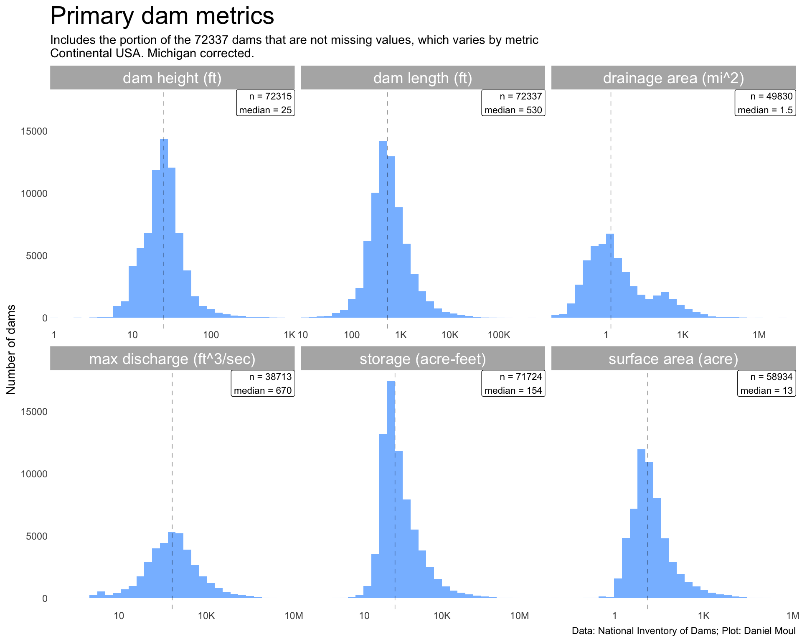
Figure 6.3: Histograms of primary dam metrics
For big dams, damHeight and maxDischarge are one end of the distribution. The other big dam metric distributions are log-normal-ish.
Show the code
dta_for_plot <- dams |>st_drop_geometry() |>select(name, state, big_dam, nidId, nidStorage, nidHeight, damLength, surfaceArea, drainageArea, maxDischarge) |>filter(big_dam) |>filter(nidId !="MI00650") |>filter(damLength >10)dta_for_plot_long <- dta_for_plot |>pivot_longer(cols = nidStorage:maxDischarge,names_to ="metric",values_to ="value" ) |>filter(value >0) |>mutate(metric_label =case_match( metric,"damLength"~"dam length (ft)","nidHeight"~"dam height (ft)","drainageArea"~"drainage area (mi^2)","maxDischarge"~"max discharge (ft^3/sec)","surfaceArea"~"surface area (acre)","nidStorage"~"storage (acre-feet)",.default =glue("error: {metric}") ))dta_for_plot_medians = dta_for_plot_long |>reframe(value =median(value),n_dams =n(),.by = metric_label)n_dams_big <-nrow(dta_for_plot)dta_for_plot_long |>ggplot() +geom_histogram(aes(value),bins =30) +geom_vline(data = dta_for_plot_medians,aes(xintercept = value),lty =2,linewidth =0.25,alpha =0.5) +geom_label(data = dta_for_plot_medians,aes(x =Inf, y =Inf, label =glue("n = {n_dams}\nmedian = {round(value, digits = 1)}")),hjust =1, vjust =1,size =3) +scale_x_log10(label =label_number(scale_cut =cut_short_scale())) +facet_wrap(~metric_label, scales ="free_x") +labs(title ="Big dams: primary dam metrics",subtitle =glue("Includes the portion of the {n_dams_big} dams that are not missing values, which varies by metric","\nContinental USA. Michigan corrected."),x =NULL,y ="Number of dams",caption = my_caption )
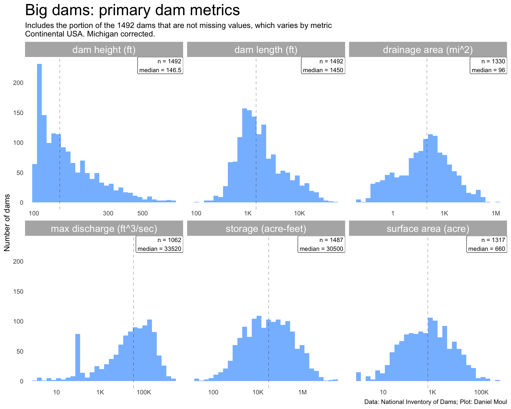
Figure 6.4: Primary dam metrics for big dams
6.3 Counts
A plurality of dams are privately owned, for recreation, and made of earth (Figure 9.5).
Figure 6.7: Primary purpose by primary owner type - count
The top ten combinations are shown below (Table 6.1):
Show the code
owner_purpose |>slice_max(order_by = n, n =10) |>mutate(idx =row_number()) |>gt() |>tab_options(table.font.size =11) |>tab_header(md("**Top 10 combinations of primary owner type and primary purpose**")) |>cols_align(columns =c(starts_with("primary")),align ="left") |>fmt_number(columns = n,decimals =0)
Table 6.1
Top 10 combinations of primary owner type and primary purpose
primaryOwnerTypeId
primaryPurposeId
n
idx
Private
Recreation
23,975
1
Local Government
Flood Risk Reduction
8,734
2
Private
Fire Protection, Stock, Or Small Fish Pond
8,136
3
Private
Other or not specified
7,982
4
Private
Irrigation
6,356
5
Local Government
Recreation
3,088
6
State
Flood Risk Reduction
2,730
7
Private
Flood Risk Reduction
2,409
8
State
Recreation
2,322
9
Local Government
Water Supply
2,168
10
Large dams, by contrast, are mostly federally owned and for flood reduction, whereas local governments’ dams are mostly for water supply, and public utility-owned dams are mostly for electricity generation (Figure 6.8).
Show the code
owner_purpose_big <- dams_no_geo |>filter(big_dam) |># only "big" damscount(primaryOwnerTypeId, primaryPurposeId) |>complete(primaryOwnerTypeId, primaryPurposeId, fill =list(n =0)) |>mutate(primaryOwnerTypeId =fct_reorder(primaryOwnerTypeId, -n, sum),primaryPurposeId =fct_reorder(primaryPurposeId, n, sum))owner_purpose_big |>ggplot(aes(x = primaryOwnerTypeId, y = primaryPurposeId)) +geom_tile(aes(fill = n),alpha =0.98) +geom_text(aes(label = n),color ="white",size =3) +theme(plot.title.position ="plot",axis.text.x =element_text(angle =60, hjust =0) ) +scale_x_discrete(position ="top") +scale_fill_continuous(transform = scales::transform_log1p(),breaks =c(0, 10, 100, 1000, 10000)) +labs(title ="Big dams: primary purpose by primary owner type - count",subtitle ="'Big' dam defined as having height >= 100 ft",x ="Primary owner",y ="Primary purpose",caption = my_caption )
Figure 6.8: Primary purpose by primary owner type - count
The most common combinations for big dams are shown below:
Show the code
owner_purpose_big |>slice_max(order_by = n, n =10) |>mutate(idx =row_number()) |>gt() |>tab_options(table.font.size =11) |>tab_header(md("**Big dams: top 10 combinations of primary owner type and primary purpose**<br>Dams with height > 100 ft")) |>cols_align(columns =c(starts_with("primary")),align ="left") |>fmt_number(columns = n,decimals =0)
Table 6.2
Big dams: top 10 combinations of primary owner type and primary purpose Dams with height > 100 ft
primaryOwnerTypeId
primaryPurposeId
n
idx
Federal
Flood Risk Reduction
292
1
Private
Tailings
229
2
Local Government
Water Supply
140
3
Private
Hydroelectric
94
4
Public Utility
Hydroelectric
93
5
Public Utility
Water Supply
75
6
Private
Other or not specified
73
7
Federal
Irrigation
59
8
Local Government
Flood Risk Reduction
52
9
Federal
Hydroelectric
49
10
Alluvial plots provide a bird’s eye view of counts of multiple properties. I go deeper into North Carolina dams in Chapter 7 Owners in NC exclusively using this kind of plot.
Show the code
# following example at https://mjfrigaard.github.io/fm-ggp2/alluvial_charts.htmldams_wide <- dams |>st_drop_geometry() |># filter(nidHeightId == "Greater than 100 ft") |>select(nidId, primaryOwnerTypeId, primaryPurposeId) |>filter(primaryOwnerTypeId !="Other or not specified", primaryPurposeId !="Other or not specified") |>mutate(primaryPurposeId =fct_lump_n(primaryPurposeId, 9)) |>count(primaryOwnerTypeId, primaryPurposeId) |>mutate(primaryOwnerTypeId =fct_reorder(primaryOwnerTypeId, n, sum),primaryPurposeId =fct_reorder(primaryPurposeId, n, sum) )p1 <- dams_wide |>ggplot(aes(axis1 = primaryOwnerTypeId, axis2 = primaryPurposeId,y = n)) +scale_x_discrete(limits =c("Owner", "Purpose"),expand =c(0.1, 0.07),position ="top") +geom_alluvium(aes(fill = primaryPurposeId),show.legend =FALSE) +geom_stratum(linewidth =0.05,alpha =0.8) +geom_text(stat ="stratum",aes(label =after_stat(stratum)),size =3) +scale_fill_brewer(palette ="Paired") +theme(axis.text.x =element_text(size =rel(2))) +labs(subtitle ="A. All dams",y =NULL )p1 +plot_annotation(title ="Dams in continental US by primary owner and primary purpose",caption = my_caption )
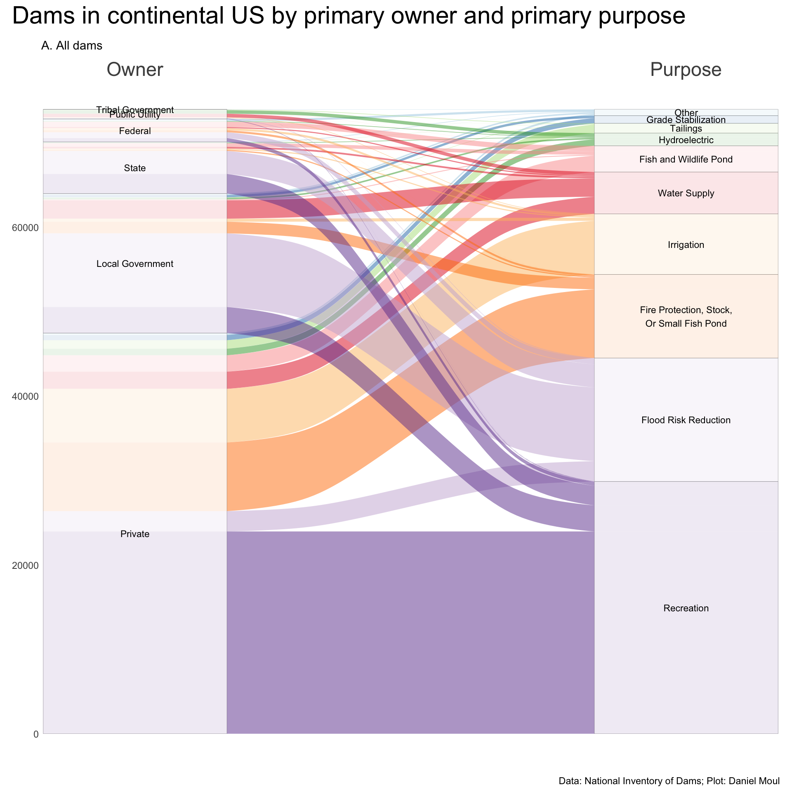
Figure 6.9: Dams by owner and purpose
Show the code
# following example at https://mjfrigaard.github.io/fm-ggp2/alluvial_charts.htmlbig_dams_wide <- dams |>st_drop_geometry() |>select(nidId, big_dam, primaryOwnerTypeId, primaryPurposeId) |>filter(big_dam, primaryOwnerTypeId !="Other or not specified", primaryPurposeId !="Other or not specified") |>mutate(primaryPurposeId =fct_lump_n(primaryPurposeId, 7)) |>count(primaryOwnerTypeId, primaryPurposeId) |>mutate(primaryOwnerTypeId =fct_reorder(primaryOwnerTypeId, n, sum),primaryPurposeId =fct_reorder(primaryPurposeId, n, sum) )p1 <- big_dams_wide |>ggplot(aes(axis1 = primaryOwnerTypeId, axis2 = primaryPurposeId,y = n)) +scale_x_discrete(limits =c("Owner", "Purpose"),expand =c(0.1, 0.07),position ="top") +geom_alluvium(aes(fill = primaryPurposeId),show.legend =FALSE) +geom_stratum(linewidth =0.05,alpha =0.8) +geom_text(stat ="stratum",aes(label =after_stat(stratum)),size =3) +scale_fill_brewer(palette ="Paired") +theme(axis.text.x =element_text(size =rel(2))) +labs(subtitle ="A. All dams",y =NULL )p1 +plot_annotation(title ="Big dams in continental US by primary owner and primary purpose",caption = my_caption )
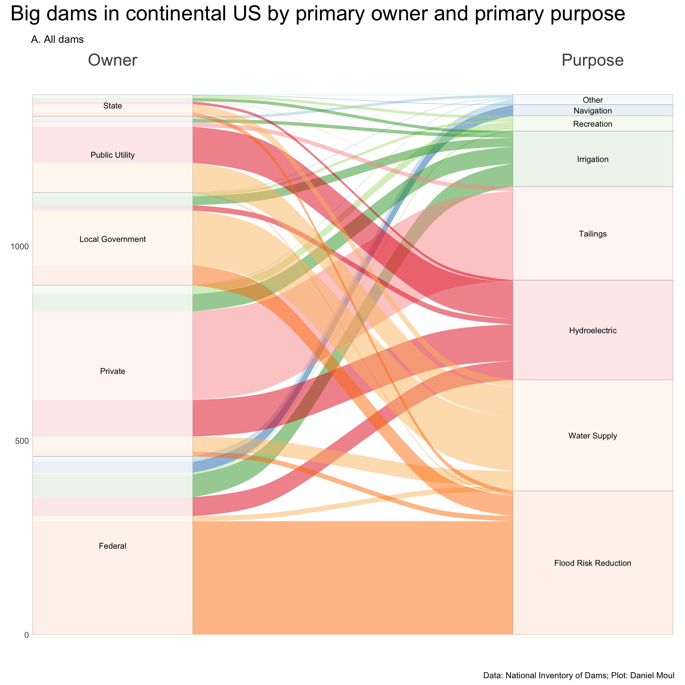
Figure 6.10: Big dams by owner and purpose
6.4 Ratios
Ratios are one thing expressed as a multiple of the other, i.e., divided by the other. Let’s look at surfaceArea::nidStorage. Dams built in hilly areas seem to me to be more likely to have low ratios of surfaceArea to nidStorage, i.e., the dams are likely to be deeper rather than broader. Can we substantiate or disprove this conjecture?
Panel A provides context: state population by area.
Panel B plots the number dams in each state by state area.
Panel C plots number of dams in the state by state population.
And panel D plots dam storage (nidStorage) by number of dams in the state.
In each plot one or more regional clusters are visible.
Show the code
p1 <- dams_by_state_with_pop |>ggplot() +geom_text(aes(usgs_total_area_less_great_lakes, pop, label = state_abb, color = state_region),check_overlap =FALSE,show.legend =FALSE,key_glyph ="point") +scale_x_continuous(labels =label_number(scale_cut =cut_short_scale()),expand =expansion(mult =c(0.02, 0.04))) +scale_y_continuous(labels =label_number(scale_cut =cut_short_scale()),expand =expansion(mult =c(0.02, 0.04))) +labs(subtitle ="A: Population by surface area",x ="State area (sq mi)",y ="Population" )p2 <- dams_by_state_with_pop |>ggplot() +geom_text(aes(usgs_total_area_less_great_lakes, n, label = state_abb, color = state_region),check_overlap =FALSE,key_glyph ="point") +scale_x_continuous(labels =label_number(scale_cut =cut_short_scale()),expand =expansion(mult =c(0.02, 0.04))) +scale_y_continuous(labels =label_number(scale_cut =cut_short_scale()),expand =expansion(mult =c(0.02, 0.04))) +guides(color =guide_legend(position ="inside",override.aes =list(size =3))) +theme(legend.position.inside =c(0.8, 0.7)) +labs(subtitle ="B: Number of dams by area",x ="State area (sq mi)",y ="Number of dams in the NID" )p3 <- dams_by_state_with_pop |>ggplot() +geom_text(aes(pop, n, label = state_abb, color = state_region),check_overlap =FALSE,show.legend =FALSE,key_glyph ="point") +scale_x_continuous(labels =label_number(scale_cut =cut_short_scale()),expand =expansion(mult =c(0.02, 0.04))) +scale_y_continuous(labels =label_number(scale_cut =cut_short_scale()),expand =expansion(mult =c(0.02, 0.04))) +labs(subtitle ="C: Number of dams by population",x ="Population",y ="Number of dams in the NID" )p4 <- dams_by_state_with_pop |>left_join( storage_by_state_mi_corrected |>select(state_abb, nidStorage = n),by ="state_abb" ) |>ggplot() +geom_text(aes(n, nidStorage, label = state_abb, color = state_region),check_overlap =FALSE,show.legend =FALSE,key_glyph ="point") +scale_x_continuous(labels =label_number(scale_cut =cut_short_scale()),expand =expansion(mult =c(0.02, 0.04))) +scale_y_continuous(labels =label_number(scale_cut =cut_short_scale()),expand =expansion(mult =c(0.02, 0.04))) +labs(subtitle ="D: Dams' volume of water under management",x ="Number of dams in the NID",y ="nidStorage (acre ft)" )p1 + p2 + p3 + p4 +plot_annotation(title ="State land area, population, and number of dams",subtitle ="Area less Great Lakes (if applicable). Michigan corrected.",caption = my_caption_nid_census )
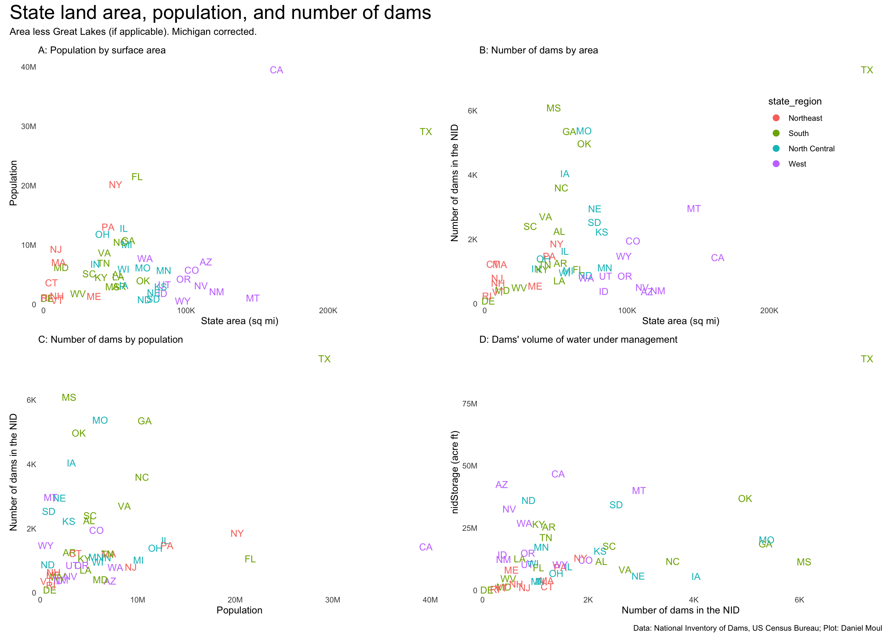
Figure 6.11: State land area, population, and number of dams
Figure 6.12 below plots the ratio of surfaceArea to water under management (nidStorage) using medians (panels A and C) and means (panels B and C). In the plots that employ means, outliers and data errors have more effect. For example, in panel B Washington (WA), Colorado (CO) and Oregon (OR) are higher in the plot, from which I infer that each state has some large, shallow reservoirs (or large data errors).
I found and removed two data errors for New Mexico. Note the reported discrepancy in damHeight and nidStorage for these two dams with very large surfaceArea when they are placed in context with the ten dams in NM with the most surface area (Table 6.3).
Show the code
dams_no_geo |>filter(state_abb =="NM") |>slice_max(order_by = surfaceArea,n =10) |>select(name, nidId, surfaceArea, nidHeight, nidStorage) |>gt() |>tab_options(table.font.size =10) |>tab_header(md(glue("**Dams in New Mexico with largest reported `surfaceArea`**","<br>*Acres. Click column headers to sort*"))) |>tab_source_note(md(glue("*Source: NID. Table: Daniel Moul.*"))) |>fmt_number(columns =c(surfaceArea, nidHeight, nidStorage),decimals =0) |>tab_style(style =list(cell_fill(color ="lightyellow") ),locations =cells_body(rows =str_detect(name, "Encino") |str_detect(name, "Alamos") ) ) |>opt_interactive(use_pagination =FALSE )
Dams in New Mexico with largest reported surfaceArea Acres. Click column headers to sort
Source: NID. Table: Daniel Moul.
Table 6.3: Dams in New Mexico with most reported surfaceArea of water behind dams
The ratio dam surface area::nidStorage is an indicator of the local geography: a high ratio indicates a wide, shallow reservoir behind the dam; a low ratio indicates a deep reservoir in a valley with steep gradients or perhaps a quarry or other excavated area.
Plotting median and mean state ratios by state area per dam (Figure 6.12) reveals some regional clusters.
Show the code
p1 <- dams_ratios_per_state |>ggplot(aes(sqmi_per_dam, median_surface_area_to_nidStorage, color = state_region)) +geom_text(aes(label = state_abb),check_overlap =FALSE,show.legend =FALSE,key_glyph ="point") +geom_mark_hull() +scale_x_log10(labels =label_number(scale_cut =cut_short_scale()),expand =expansion(mult =c(0.02, 0.04))) +scale_y_continuous(labels =label_number(scale_cut =cut_short_scale()),expand =expansion(mult =c(0.02, 0.04))) +guides(color ="none") +labs(subtitle ="A: Median(dam surface area::nidStorage) by sq mi per dam",x ="State area (sq mi) per dam (log10 scale)",y ="Median ratio" )p2 <- dams_ratios_per_state |>ggplot(aes(sqmi_per_dam, avg_surface_area_to_nidStorage, color = state_region)) +geom_text(aes(label = state_abb),check_overlap =FALSE,show.legend =FALSE,key_glyph ="point") +geom_mark_hull() +scale_x_log10(labels =label_number(scale_cut =cut_short_scale()),expand =expansion(mult =c(0.02, 0.04))) +scale_y_log10(labels =label_number(scale_cut =cut_short_scale()),expand =expansion(mult =c(0.02, 0.04))) +guides(color ="none") +labs(subtitle ="B: Mean(dam surface area::nidStorage) by sq mi per dam",x ="State area (sq mi) per dam (log10 scale)",y ="Mean ratio (log10 scale)" )p1 + p2 +plot_annotation(title ="State ratios: median and mean surface area to dam volume",subtitle ="Colored by region",caption = my_caption )
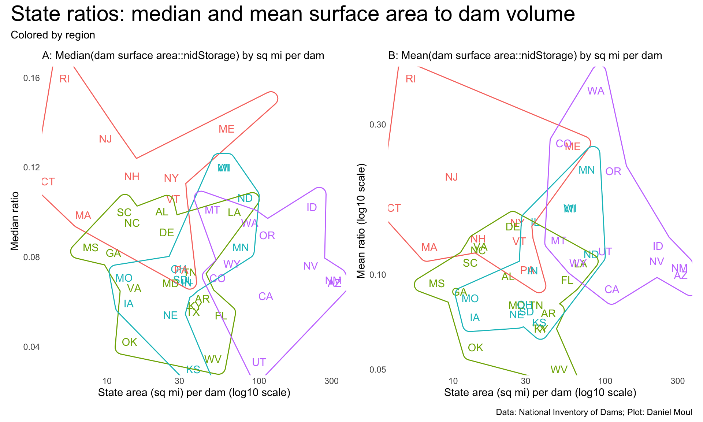
Figure 6.12: Median and mean state values for ratio of surfaceArea to nidStorage
6.5 Dam completion and modification
Public dams are major civil works projects that require political will, budgeting, financing, and on-going funding to operate and maintain. Most dams were built after World War II and prior to the Reagan administration in the eighties.
6.5.1 New dams
Show the code
dta_for_plot <- dams_no_geo |>select(name, state, nidHeight, nidHeightId, yearCompleted, yearCompletedId, yearsModified)p1 <- dta_for_plot |>ggplot() +geom_bar(aes(yearCompletedId, fill = nidHeightId)) +# scale_x_continuous(expand = expansion(mult = c(0.01, 0.04))) +scale_y_continuous(label =label_number(scale_cut =cut_short_scale()),expand =expansion(mult =c(0.01, 0.04))) +guides(fill ="none") +coord_flip() +theme(plot.title.position ="plot") +labs(subtitle ="A: By decade",x =NULL,y =NULL )p2 <- dta_for_plot |>filter(yearCompletedId !="Undetermined") |>ggplot() +geom_vline(xintercept =c(1950, 1979),lty =2,linewidth =0.2,alpha =0.5) +stat_ecdf(aes(yearCompleted)) +scale_x_continuous(breaks =c(1850, 1900, 1950, 1979, 2000)) +scale_y_continuous(label =label_percent(),expand =expansion(mult =c(0.0, 0.04))) +theme(plot.title.position ="plot") +coord_cartesian(xlim =c(1850, NA)) +labs(subtitle ="B: Cumulative distribution: year completed",x =NULL,y ="Percent of all dams with year built data" )p3 <- dta_for_plot |>filter(yearCompletedId !="Undetermined") |>ggplot() +geom_vline(xintercept =c(1950, 1979),lty =2,linewidth =0.2,alpha =0.5) +geom_density(aes(yearCompleted, color = nidHeightId)) +scale_x_continuous(breaks =c(1850, 1900, 1950, 1979, 2000)) +guides(color ="none") +theme(plot.title.position ="plot") +coord_cartesian(xlim =c(1850, NA)) +labs(subtitle ="C: Density plot: year completed by height",x =NULL )p4 <- dta_for_plot |>filter(yearCompletedId !="Undetermined") |>ggplot() +geom_vline(xintercept =c(1950, 1979),lty =2,linewidth =0.2,alpha =0.5) +stat_ecdf(aes(yearCompleted, color = nidHeightId)) +scale_x_continuous(breaks =c(1850, 1900, 1950, 1979, 2000)) +scale_y_continuous(label =label_percent(),expand =expansion(mult =c(0.0, 0.04))) +guides(color =guide_legend(position ="inside",override.aes =list(linewidth =3))) +theme(plot.title.position ="plot",legend.position.inside =c(0.3, 0.7)) +coord_cartesian(xlim =c(1850, NA)) +labs(subtitle ="D: Cumulative distribution: year completed by dam height",x =NULL,y ="Percent of all dams with year built data" )p1 + p2 + p3 + p4 +plot_annotation(title ="The heyday of dam building in the US was 1950-1979",subtitle ="It's likely that the dams of undetermined nidHeight built since 1950 are small dams (plots C and D).",caption = my_caption )
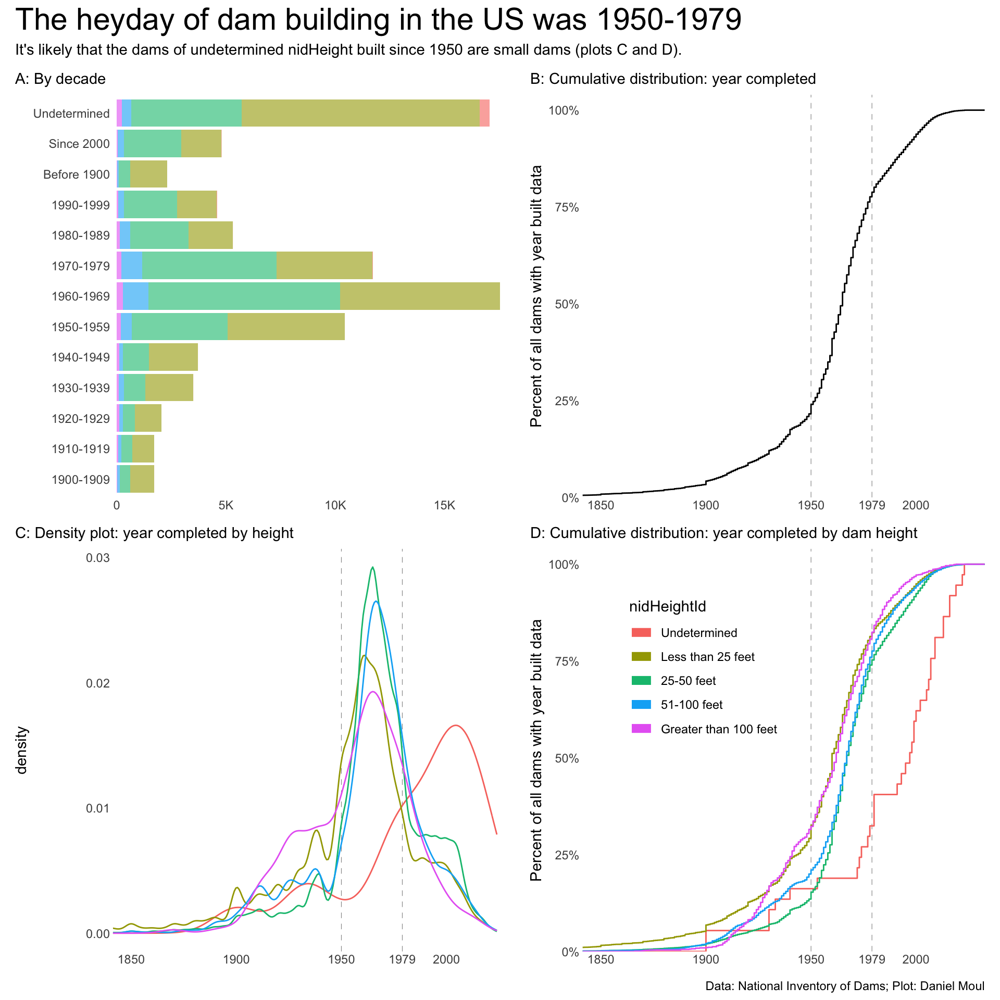
Figure 6.13: Year dams were completed and their height
6.5.2 Primary purposes
Show the code
yearCompletedId_levels <-c("Before 1900", "1900-1909", "1910-1919", "1920-1929", "1930-1939","1940-1949", "1950-1959", "1960-1969", "1970-1979", "1980-1989","1990-1999", "Since 2000", "Undetermined")yearCompletedId_breaks <-c("Before 1900", # "1900-1909", "1910-1919", # "1920-1929", "1930-1939", # "1940-1949", "1950-1959", # "1960-1969", "1970-1979", # "1980-1989","1990-1999"# , "Since 2000", "Undetermined" )year_build_by_primary_purpose <- dams_no_geo |>select(nidId, primaryOwnerTypeId, primaryPurposeId, state, state_abb, state_region, nidStorage, yearCompleted, yearCompletedId) |>filter(yearCompletedId !="Undetermined", primaryPurposeId !="Other or not specified") |>mutate(yearCompletedId =factor(yearCompletedId, levels = yearCompletedId_levels, ordered =TRUE)) |>mutate(primaryPurposeId =fct_lump_n(primaryPurposeId, n =5)) |>count(yearCompletedId, primaryPurposeId, state_region)year_build_by_primary_purpose_big_dams <- dams_no_geo |>select(nidId, primaryOwnerTypeId, primaryPurposeId, state, state_abb, state_region, nidStorage, yearCompleted, yearCompletedId, big_dam) |>filter(yearCompletedId !="Undetermined", primaryPurposeId !="Other or not specified") |>mutate(yearCompletedId =factor(yearCompletedId, levels = yearCompletedId_levels, ordered =TRUE)) |>filter(big_dam) |>mutate(primaryPurposeId =fct_lump_n(primaryPurposeId, n =5)) |>count(yearCompletedId, primaryPurposeId, state_region)p1 <- year_build_by_primary_purpose |>ggplot() +geom_line(aes(yearCompletedId, n, color = primaryPurposeId, group = primaryPurposeId)) +# geom_point(aes(yearCompletedId, n, color = primaryPurposeId),# size = 0.75,# show.legend = FALSE) +scale_x_discrete(breaks = yearCompletedId_breaks) +scale_y_continuous(label =label_number(scale_cut =cut_short_scale()),expand =expansion(mult =c(0.01, 0.04))) +guides(color =guide_legend(#position = "inside",override.aes =list(linewidth =3))) +expand_limits(y =0) +facet_wrap(~state_region) +theme(plot.title.position ="plot",# legend.position.inside = c(I(0.15), I(0.85)),legend.position ="bottom",axis.text.x =element_text(angle =30, hjust =1)) +labs(subtitle ="A: Dams",x =NULL,y =NULL )p2 <- year_build_by_primary_purpose_big_dams |>ggplot() +geom_line(aes(yearCompletedId, n, color = primaryPurposeId, group = primaryPurposeId)) +# geom_point(aes(yearCompletedId, n, color = primaryPurposeId),# size = 0.75,# show.legend = FALSE) +scale_x_discrete(breaks = yearCompletedId_breaks) +scale_y_continuous(label =label_number(scale_cut =cut_short_scale()),expand =expansion(mult =c(0.01, 0.04))) +scale_color_viridis_d(end =0.9) +guides(color =guide_legend(#position = "inside",override.aes =list(linewidth =3))) +expand_limits(y =0) +facet_wrap(~state_region) +theme(plot.title.position ="plot",# legend.position.inside = c(I(0.15), I(0.85)),legend.position ="bottom",axis.text.x =element_text(angle =30, hjust =1)) +labs(subtitle ="B: Big dams",x =NULL,y =NULL )p1 + p2 +plot_annotation(title ="Most dams were built in the South. Most big dams were built in the West",subtitle =glue("New dams and their primary purpose, by region","\nIncludes dams for which purpose and year completed data are available"),caption = my_caption )
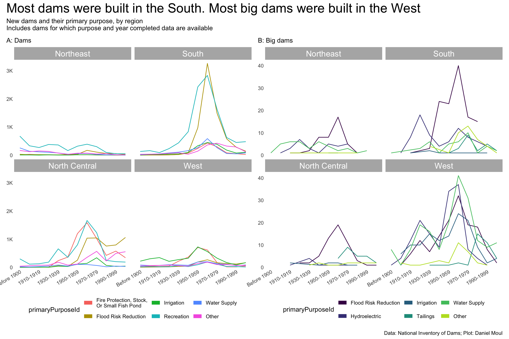
Figure 6.14: New dams and their primary purpose, by region
Show the code
year_build_by_primary_purpose <- dams_no_geo |>filter(state_region =="South") |>filter(yearCompletedId !="Undetermined", primaryPurposeId !="Other or not specified") |>select(nidId, primaryOwnerTypeId, primaryPurposeId, state, state_abb, state_region, nidStorage, yearCompleted, yearCompletedId) |>mutate(yearCompletedId =factor(yearCompletedId, levels = yearCompletedId_levels, ordered =TRUE)) |>mutate(primaryPurposeId =fct_lump_n(primaryPurposeId, n =5)) |>count(yearCompletedId, primaryPurposeId, state_region, state_abb)year_build_by_primary_purpose_big_dams <- dams_no_geo |>filter(big_dam) |>filter(state_region =="South") |>filter(yearCompletedId !="Undetermined", primaryPurposeId !="Other or not specified") |>select(nidId, primaryOwnerTypeId, primaryPurposeId, state, state_abb, state_region, nidStorage, yearCompleted, yearCompletedId) |>mutate(yearCompletedId =factor(yearCompletedId, levels = yearCompletedId_levels, ordered =TRUE)) |>mutate(primaryPurposeId =fct_lump_n(primaryPurposeId, n =5)) |>count(yearCompletedId, primaryPurposeId, state_region, state_abb)p1 <- year_build_by_primary_purpose |>ggplot() +geom_line(aes(yearCompletedId, n, color = primaryPurposeId, group = primaryPurposeId)) +# geom_point(aes(yearCompletedId, n, color = primaryPurposeId),# size = 0.75,# show.legend = FALSE) +scale_x_discrete(breaks = yearCompletedId_breaks) +scale_y_continuous(#label = label_number(scale_cut = cut_short_scale()),expand =expansion(mult =c(0.01, 0.04))) +guides(color =guide_legend(# position = "inside",override.aes =list(linewidth =3))) +expand_limits(y =0) +facet_wrap(~state_abb) +theme(plot.title.position ="plot",# legend.position.inside = c(I(0.15), I(0.85)),legend.position ="bottom",axis.text.x =element_text(angle =30, hjust =1)) +labs(subtitle ="A: Dams",x =NULL,y =NULL )p2 <- year_build_by_primary_purpose_big_dams |>ggplot() +geom_line(aes(yearCompletedId, n, color = primaryPurposeId, group = primaryPurposeId)) +# geom_point(aes(yearCompletedId, n, color = primaryPurposeId),# size = 0.75,# show.legend = FALSE) +scale_x_discrete(breaks = yearCompletedId_breaks) +scale_y_continuous(breaks =2*0:5,#label = label_number(scale_cut = cut_short_scale()),expand =expansion(mult =c(0.01, 0.04))) +scale_color_viridis_d(end =0.9) +guides(color =guide_legend(# position = "inside",override.aes =list(linewidth =3))) +expand_limits(y =0) +facet_wrap(~state_abb) +theme(plot.title.position ="plot",# legend.position.inside = c(I(0.15), I(0.85)),legend.position ="bottom",axis.text.x =element_text(angle =30, hjust =1)) +labs(subtitle ="B: Big dams",x =NULL,y =NULL )p1 + p2 +plot_annotation(title =glue("Most of the dams in the South were built in Texas and Oklahoma", "\nfor flood risk reduction"),subtitle =glue("New dams in the South, by primary purpose","\nIncludes dams for which purpose and year completed data are available"),caption = my_caption )
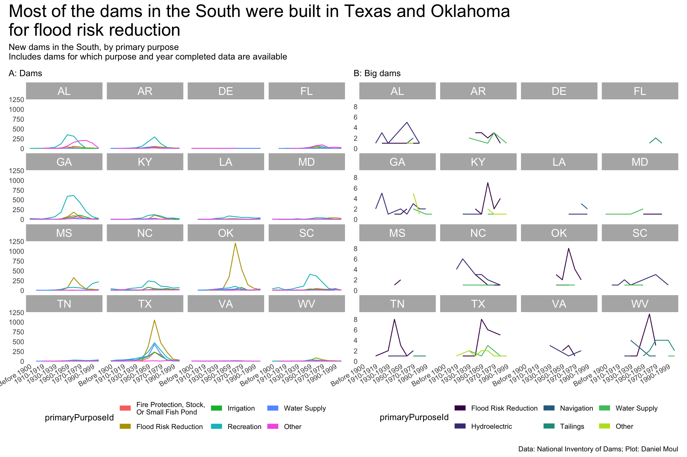
Figure 6.15: New dams and their purpose (South region)
Show the code
year_build_by_primary_purpose <- dams_no_geo |>filter(yearCompletedId !="Undetermined", primaryPurposeId !="Other or not specified") |>select(nidId, primaryOwnerTypeId, primaryPurposeId, state, state_abb, state_region, nidStorage, yearCompleted, yearCompletedId) |>mutate(yearCompletedId =factor(yearCompletedId, levels = yearCompletedId_levels, ordered =TRUE)) |>mutate(primaryPurposeId =fct_lump_n(primaryPurposeId, n =5)) |>count(yearCompletedId, primaryPurposeId, state_region, state_abb) |>mutate(primaryPurposeId =fct_reorder(primaryPurposeId, -n, min))dta_highlight <- year_build_by_primary_purpose |>slice_max(order_by = n, n =1,by =c(primaryPurposeId))p1 <- year_build_by_primary_purpose |>ggplot() +geom_line(aes(yearCompletedId, n, group = state_abb),linewidth =0.2,alpha =0.2) +geom_point(data = dta_highlight,aes(yearCompletedId, n, ),size =2,color ="steelblue",show.legend =FALSE) +geom_text(data = dta_highlight,aes(yearCompletedId, n, label = state_abb),nudge_x =1,color ="steelblue",show.legend =FALSE) +scale_x_discrete(breaks = yearCompletedId_breaks) +scale_y_continuous(expand =expansion(mult =c(0.01, 0.1))) +guides(color =guide_legend(override.aes =list(linewidth =3))) +expand_limits(y =0) +facet_wrap(~primaryPurposeId, scales ="free_y") +theme(plot.title.position ="plot",legend.position ="top",axis.text.x =element_text(angle =30, hjust =1) ) +labs(subtitle ="A: By decade",x =NULL,y =NULL )year_build_by_primary_purpose <- dams_no_geo |>filter(yearCompletedId !="Undetermined", primaryPurposeId !="Other or not specified") |>select(nidId, primaryOwnerTypeId, primaryPurposeId, state, state_abb, state_region, nidStorage, yearCompleted, yearCompletedId) |>mutate(yearCompletedId =factor(yearCompletedId, levels = yearCompletedId_levels, ordered =TRUE)) |>mutate(primaryPurposeId =fct_lump_n(primaryPurposeId, n =5)) |>count(yearCompletedId, primaryPurposeId, state_abb) |>complete(yearCompletedId, primaryPurposeId, state_abb,fill =list(n =0)) |>mutate(n_cum =cumsum(n),idx =row_number(),.by =c(primaryPurposeId, state_abb)) |>mutate(primaryPurposeId =fct_reorder(primaryPurposeId, -n_cum, min))dta_highlight <- year_build_by_primary_purpose |>filter(yearCompletedId !="Undetermined", yearCompletedId =="Since 2000") |>slice_max(order_by = n_cum, n =1,by = primaryPurposeId)p2 <- year_build_by_primary_purpose |>ggplot() +geom_line(aes(yearCompletedId, n_cum, group = state_abb),linewidth =0.2,alpha =0.2) +geom_text(data = dta_highlight,aes(yearCompletedId, n_cum, label = state_abb),nudge_x =0.5,color ="steelblue",show.legend =FALSE) +scale_x_discrete(breaks = yearCompletedId_breaks) +scale_y_continuous(expand =expansion(mult =c(0.01, 0.1))) +guides(color =guide_legend(override.aes =list(linewidth =3))) +expand_limits(y =0) +facet_wrap(~primaryPurposeId, scales ="free_y") +theme(plot.title.position ="plot",legend.position ="top",axis.text.x =element_text(angle =30, hjust =1) ) +labs(subtitle ="B: Cumulative",x =NULL,y =NULL )p1 / p2 +plot_annotation(title ="The most common purposes vary by state\ndue to geography and local priorities",subtitle =glue("New dams in each state, by primary purpose","\nIncludes dams for which purpose and year completed data are available"),caption = my_caption )
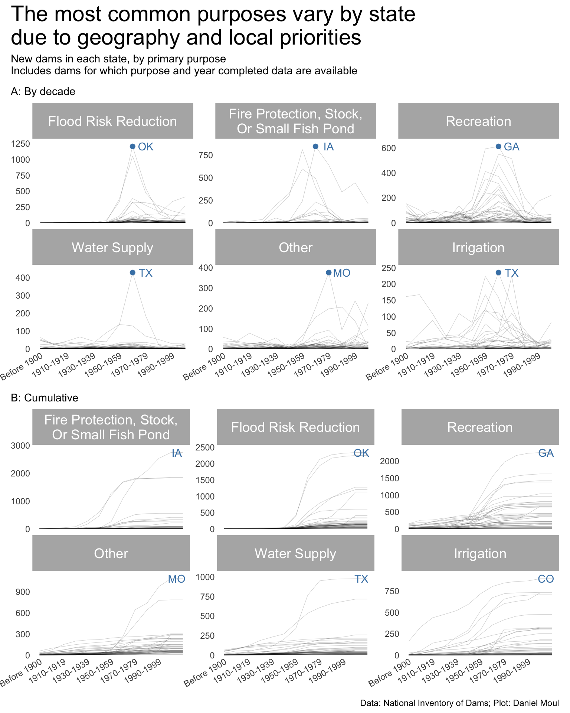
Figure 6.16: New dams in each state, by primary purpose
I did not expect New York to have the most hydroelectric dams. Or the most dams for navigation, which appears to be mostly related to the Erie canal “from 1905 to 1918 when the”Barge Canal” was built and over half the original route was abandoned.”2
Missouri has the most dams for debris control and grade stabilization, presumably due to mining.
Florida has the most dams for tailings. I expected another state with a lot of mining to lead here.
Show the code
exclude_purposes <-c("Recreation", "Flood Risk Reduction", "Fire Protection, Stock,\nOr Small Fish Pond","Irrigation", "Water Supply")year_build_by_primary_purpose <- dams_no_geo |>filter(yearCompletedId !="Undetermined", primaryPurposeId !="Other or not specified") |>filter(!primaryPurposeId %in% exclude_purposes) |>select(nidId, primaryOwnerTypeId, primaryPurposeId, state, state_abb, state_region, nidStorage, yearCompleted, yearCompletedId) |>mutate(yearCompletedId =factor(yearCompletedId, levels = yearCompletedId_levels, ordered =TRUE)) |>count(yearCompletedId, primaryPurposeId, state_abb) |>complete(yearCompletedId, primaryPurposeId, state_abb,fill =list(n =0)) |>mutate(n_cum =cumsum(n),idx =row_number(),.by =c(primaryPurposeId, state_abb)) |>mutate(primaryPurposeId =fct_reorder(primaryPurposeId, -n_cum, min))dta_highlight <- year_build_by_primary_purpose |>filter(yearCompletedId !="Undetermined", yearCompletedId =="Since 2000") |>slice_max(order_by = n_cum, n =1,by = primaryPurposeId)p1 <- year_build_by_primary_purpose |>ggplot() +geom_line(aes(yearCompletedId, n_cum, group = state_abb),linewidth =0.2,alpha =0.2) +geom_text(data = dta_highlight,aes(yearCompletedId, n_cum, label = state_abb),nudge_x =0.5,color ="steelblue",show.legend =FALSE) +scale_x_discrete(breaks = yearCompletedId_breaks) +scale_y_continuous(expand =expansion(mult =c(0.01, 0.1))) +guides(color =guide_legend(override.aes =list(linewidth =3))) +expand_limits(y =0) +facet_wrap(~primaryPurposeId, scales ="free_y") +theme(plot.title.position ="plot",legend.position ="top",axis.text.x =element_text(angle =30, hjust =1) ) +labs(subtitle ="A: Dams",x =NULL,y =NULL )p1 +plot_annotation(title ="New York and Missouri are top states\nfor two of the 'other' categories",subtitle =glue("'Other' cumulative new dams in each state, by primary purpose","\nIncludes dams for which purpose and year completed data are available"),caption = my_caption )
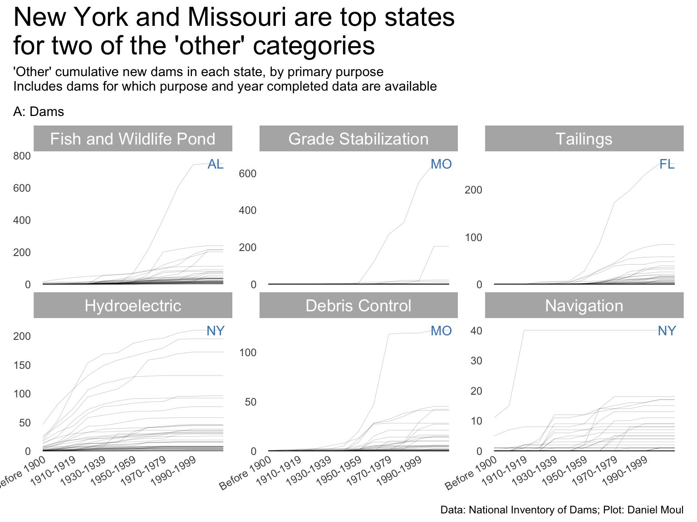
Figure 6.17: Unpacking the ‘other’ category
Show the code
year_build_by_primary_purpose <- dams_no_geo |>filter(yearCompletedId !="Undetermined", primaryPurposeId !="Other or not specified") |>select(nidId, primaryOwnerTypeId, primaryPurposeId, state, state_abb, state_region, nidStorage, yearCompleted, yearCompletedId) |>mutate(yearCompletedId =factor(yearCompletedId, levels = yearCompletedId_levels, ordered =TRUE)) |>mutate(primaryPurposeId =fct_lump_n(primaryPurposeId, n =5)) |>count(yearCompletedId, primaryPurposeId, state_region, state_abb)p1 <- year_build_by_primary_purpose |>ggplot() +geom_line(aes(yearCompletedId, n, color = primaryPurposeId, group = primaryPurposeId)) +# geom_point(aes(yearCompletedId, n, color = primaryPurposeId),# size = 0.75,# show.legend = FALSE) +scale_x_discrete(breaks = yearCompletedId_breaks) +scale_y_continuous(label =label_number(scale_cut =cut_short_scale()),expand =expansion(mult =c(0.01, 0.04))) +guides(color =guide_legend(override.aes =list(linewidth =3),nrow =1)) +expand_limits(y =0) +facet_wrap(~state_abb, scales ="free_y") +theme(plot.title.position ="plot",legend.position ="top",axis.text.x =element_text(angle =30, hjust =1) ) +labs(x =NULL,y =NULL )p1 +plot_annotation(title ="New dams and their primary purpose, by state",subtitle =glue("Includes dams for which purpose and year completed data are available", "\nY axis scale varies"),caption = my_caption )
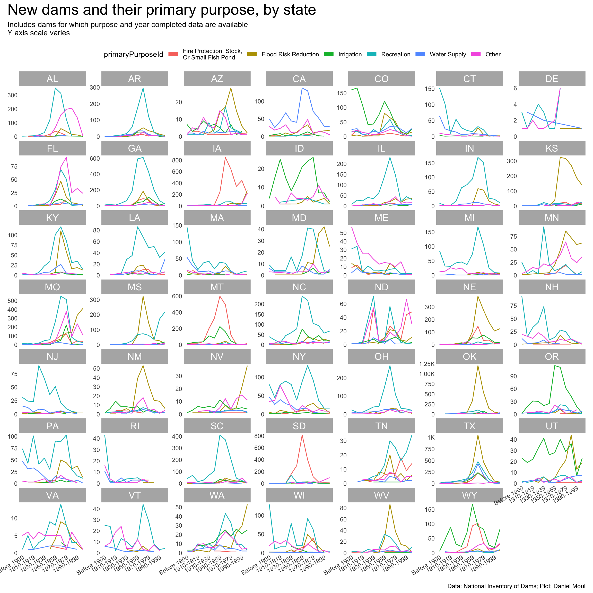
Figure 6.18: New dams and their primary purpose, by state
Show the code
year_build_by_primary_purpose_big_dams <- dams_no_geo |>filter(big_dam) |># filter(state_region == "South") |>filter(yearCompletedId !="Undetermined", primaryPurposeId !="Other or not specified") |>select(nidId, primaryOwnerTypeId, primaryPurposeId, state, state_abb, state_region, nidStorage, yearCompleted, yearCompletedId) |>mutate(yearCompletedId =factor(yearCompletedId,levels = yearCompletedId_levels,ordered =TRUE)) |>mutate(primaryPurposeId =fct_lump_n(primaryPurposeId, n =5)) |>count(yearCompletedId, primaryPurposeId, state_region, state_abb)p2 <- year_build_by_primary_purpose_big_dams |>ggplot() +geom_line(aes(yearCompletedId, n, color = primaryPurposeId, group = primaryPurposeId)) +geom_point(aes(yearCompletedId, n, color = primaryPurposeId),size =0.75,show.legend =FALSE) +scale_x_discrete(breaks = yearCompletedId_breaks) +scale_y_continuous(#breaks = 2 * 0:5,expand =expansion(mult =c(0.01, 0.04))) +scale_color_viridis_d(end =0.90) +guides(color =guide_legend(override.aes =list(linewidth =3),nrow =1)) +expand_limits(y =0) +facet_wrap(~state_abb) +theme(plot.title.position ="plot",legend.position ="top",axis.text.x =element_text(angle =30, hjust =1)) +labs(x =NULL,y =NULL )p2 +plot_annotation(title ="California has the most big dams",subtitle =glue("New big dams and their primary purpose, by state","Includes dams for which purpose and year completed data are available"),caption = my_caption )
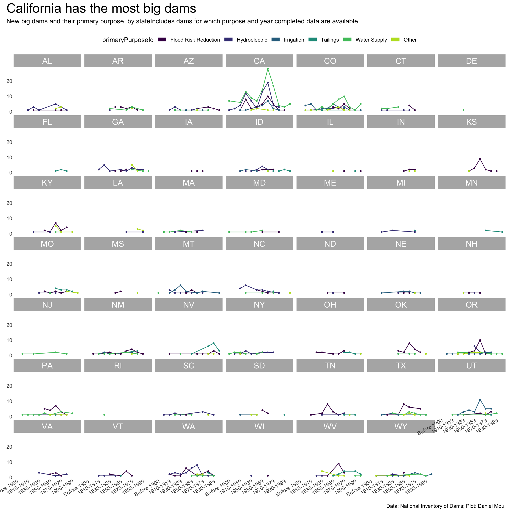
Figure 6.19: New big dams and their primary purpose, by state
6.5.3 All purposes
Since dams are often built for multiple purposes, and it can be a judgement call to decide which purpose is “primary”, this section considers all documented purposes.
Show the code
purposes_primary <- dams_no_geo |>count(primaryPurposeId)purposes_secondary <- dams_no_geo_all_purposes |>count(purpose_id)purposes_compared <-left_join( purposes_primary |>rename(purpose_id = primaryPurposeId), purposes_secondary,by ="purpose_id",suffix =c("_primary", "_all") ) |>filter(purpose_id !="Other or not specified") |>mutate(pct_primary_of_all = n_primary / n_all)p1 <- purposes_compared |>mutate(purpose_id =fct_reorder(purpose_id, pct_primary_of_all)) |>ggplot() +geom_col(aes(n_all, purpose_id),alpha =0.3) +geom_col(aes(n_primary, purpose_id),alpha =0.3) +geom_text(aes(-10, purpose_id, label =percent(pct_primary_of_all, accuracy =1)),nudge_x =-500,hjust =1) +scale_x_continuous(label =label_number(scale_cut =cut_short_scale())) +expand_limits(x =-4000) +labs(subtitle ="A: Count of purposes and\nproportion of primary purposes",x ="Count",y =NULL )tailings_pct <- purposes_compared |>filter(purpose_id =="Tailings") |>pull(pct_primary_of_all)p2 <- dams_no_geo |>mutate(n_purposes =str_count(purposeIds, ";") +1) |>ggplot() +geom_histogram(aes(n_purposes),binwidth =1) +scale_y_continuous(label =label_number(scale_cut =cut_short_scale())) +labs(subtitle ="B: Number of purposes per dam",x =NULL,y ="Count" )p2 <- dams_no_geo |>mutate(n_purposes =str_count(purposeIds, ";") +1) |>filter(!is.na(n_purposes)) |>arrange(desc(n_purposes)) |>count(n_purposes) |>arrange(desc(n)) |>mutate(pct_n = n /sum(n),n_cum =cumsum(n),n_purpose_label =glue("{n_purposes} purposes"),n_purpose_label =fct_rev(n_purpose_label),tmp =0) |>ggplot() +geom_line(aes(n_cum, n_purpose_label, group = tmp),linewidth =0.5,color ="steelblue") +geom_point(aes(n_cum, n_purpose_label, group = tmp),size =2,color ="steelblue") +geom_text(aes(x =15000, y = n_purpose_label, label = n),hjust =1) +geom_text(aes(x =30000, y = n_purpose_label, label =percent(pct_n, accuracy =0.1)),hjust =1) +scale_x_continuous(label =label_number(scale_cut =cut_short_scale())) +expand_limits(x =0) +labs(subtitle ="B: Number of purposes per dam",x ="Cumulative number of dams",y =NULL )p1 + p2 +plot_annotation(title ="Purposes: primary purpose\nas percent of all purpose mentions",subtitle =glue("Ordered by percent of purposes in which this purpose is primary. For example,"," {percent(tailings_pct, accuracy = 1)} of the cases","\nin which 'Tailings' is mentioned, it's the primary purpose.", " Or stated another way,"," in {percent(1 - tailings_pct, accuracy = 1)} of the cases,","\n'Tailings' is a secondary purpose"),caption = my_caption )
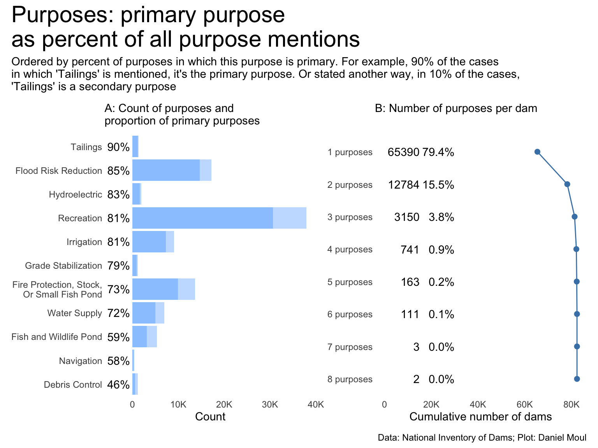
Figure 6.20: Primary and all purposes compared
Show the code
year_build_by_primary_purpose <- dams_no_geo |>left_join(dams_no_geo_all_purposes |>select(nidId, purpose_id),by =join_by(nidId)) |>filter(yearCompletedId !="Undetermined", primaryPurposeId !="Other or not specified") |>select(nidId, primaryOwnerTypeId, primaryPurposeId, purpose_id, state, state_abb, state_region, nidStorage, yearCompleted, yearCompletedId) |>mutate(yearCompletedId =factor(yearCompletedId, levels = yearCompletedId_levels, ordered =TRUE)) |>mutate(purpose_id =fct_lump_n(purpose_id, n =5)) |>count(yearCompletedId, purpose_id, state_region, state_abb) |>mutate(purpose_id =fct_reorder(purpose_id, -n, min))dta_highlight <- year_build_by_primary_purpose |>slice_max(order_by = n, n =1,by =c(purpose_id))p1 <- year_build_by_primary_purpose |>ggplot() +geom_line(aes(yearCompletedId, n, group = state_abb),linewidth =0.2,alpha =0.2) +geom_point(data = dta_highlight,aes(yearCompletedId, n, ),size =2,color ="steelblue",show.legend =FALSE) +geom_text(data = dta_highlight,aes(yearCompletedId, n, label = state_abb),nudge_x =1,color ="steelblue",show.legend =FALSE) +scale_x_discrete(breaks = yearCompletedId_breaks) +scale_y_continuous(expand =expansion(mult =c(0.01, 0.1))) +guides(color =guide_legend(override.aes =list(linewidth =3))) +expand_limits(y =0) +facet_wrap(~purpose_id, scales ="free_y") +theme(plot.title.position ="plot",legend.position ="top",axis.text.x =element_text(angle =30, hjust =1) ) +labs(subtitle ="A: By decade",x =NULL,y =NULL )year_build_by_primary_purpose <- dams_no_geo |>left_join(dams_no_geo_all_purposes |>select(nidId, purpose_id),by =join_by(nidId)) |>filter(yearCompletedId !="Undetermined", primaryPurposeId !="Other or not specified") |>select(nidId, primaryOwnerTypeId, primaryPurposeId, purpose_id, state, state_abb, state_region, nidStorage, yearCompleted, yearCompletedId) |>mutate(yearCompletedId =factor(yearCompletedId, levels = yearCompletedId_levels, ordered =TRUE)) |>mutate(purpose_id =fct_lump_n(purpose_id, n =5)) |>count(yearCompletedId, purpose_id, state_abb) |>complete(yearCompletedId, purpose_id, state_abb,fill =list(n =0)) |>mutate(n_cum =cumsum(n),idx =row_number(),.by =c(purpose_id, state_abb)) |>mutate(purpose_id =fct_reorder(purpose_id, -n_cum, min))dta_highlight <- year_build_by_primary_purpose |>filter(yearCompletedId !="Undetermined", yearCompletedId =="Since 2000") |>slice_max(order_by = n_cum, n =1,by = purpose_id)p2 <- year_build_by_primary_purpose |>ggplot() +geom_line(aes(yearCompletedId, n_cum, group = state_abb),linewidth =0.2,alpha =0.2) +geom_text(data = dta_highlight,aes(yearCompletedId, n_cum, label = state_abb),nudge_x =0.5,color ="steelblue",show.legend =FALSE) +scale_x_discrete(breaks = yearCompletedId_breaks) +scale_y_continuous(expand =expansion(mult =c(0.01, 0.1))) +guides(color =guide_legend(override.aes =list(linewidth =3))) +expand_limits(y =0) +facet_wrap(~purpose_id, scales ="free_y") +theme(plot.title.position ="plot",legend.position ="top",axis.text.x =element_text(angle =30, hjust =1) ) +labs(subtitle ="B: Cumulative",x =NULL,y =NULL )p1 / p2 +plot_annotation(title ="The most common purposes vary by state\ndue to geography and local priorities",subtitle =glue("New dams in each state, by purpose","\nIncludes dams for which purpose and year completed data are available"),caption = my_caption )
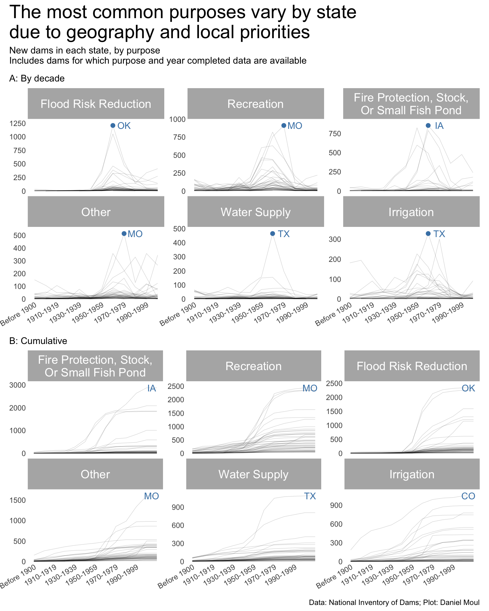
Figure 6.21: New dams in each state, by purpose
Unpacking the “other” category when considering all purposes in Figure 6.21 above, the surprises in seen in Figure 6.17 have gone away in Figure 6.22:
California overtook New York in number of hydroelectric dams
Texas overtook Missouri in dams for debris control (but not for grade stabilization)
Florida continues to have many more dams for tailings than other states, which remains a surprise..
Show the code
exclude_purposes <-c("Recreation", "Flood Risk Reduction", "Fire Protection, Stock,\nOr Small Fish Pond","Irrigation", "Water Supply")year_build_by_primary_purpose <- dams_no_geo |>left_join(dams_no_geo_all_purposes |>select(nidId, purpose_id),by =join_by(nidId)) |>filter(yearCompletedId !="Undetermined", purpose_id !="Other or not specified", purpose_id !="Other") |>filter(!purpose_id %in% exclude_purposes) |>select(nidId, primaryOwnerTypeId, primaryPurposeId, purpose_id, state, state_abb, state_region, nidStorage, yearCompleted, yearCompletedId) |>mutate(yearCompletedId =factor(yearCompletedId, levels = yearCompletedId_levels, ordered =TRUE)) |>count(yearCompletedId, purpose_id, state_abb) |>complete(yearCompletedId, purpose_id, state_abb,fill =list(n =0)) |>mutate(n_cum =cumsum(n),idx =row_number(),.by =c(purpose_id, state_abb)) |>mutate(purpose_id =fct_reorder(purpose_id, -n_cum, min))dta_highlight <- year_build_by_primary_purpose |>filter(yearCompletedId !="Undetermined", yearCompletedId =="Since 2000") |>slice_max(order_by = n_cum, n =1,by = purpose_id)p1 <- year_build_by_primary_purpose |>ggplot() +geom_line(aes(yearCompletedId, n_cum, group = state_abb),linewidth =0.2,alpha =0.2) +geom_text(data = dta_highlight,aes(yearCompletedId, n_cum, label = state_abb),nudge_x =0.5,color ="steelblue",show.legend =FALSE) +scale_x_discrete(breaks = yearCompletedId_breaks) +scale_y_continuous(expand =expansion(mult =c(0.01, 0.1))) +guides(color =guide_legend(override.aes =list(linewidth =3))) +expand_limits(y =0) +facet_wrap(~purpose_id, scales ="free_y") +theme(plot.title.position ="plot",legend.position ="top",axis.text.x =element_text(angle =30, hjust =1) ) +labs(# subtitle = "A: Dams",x =NULL,y =NULL )p1 +plot_annotation(title ="New York and Missouri are top states\nfor two of the 'other' categories",subtitle =glue("'Other' cumulative new dams in each state, by purpose","\nIncludes dams for which purpose and year completed data are available"),caption = my_caption )
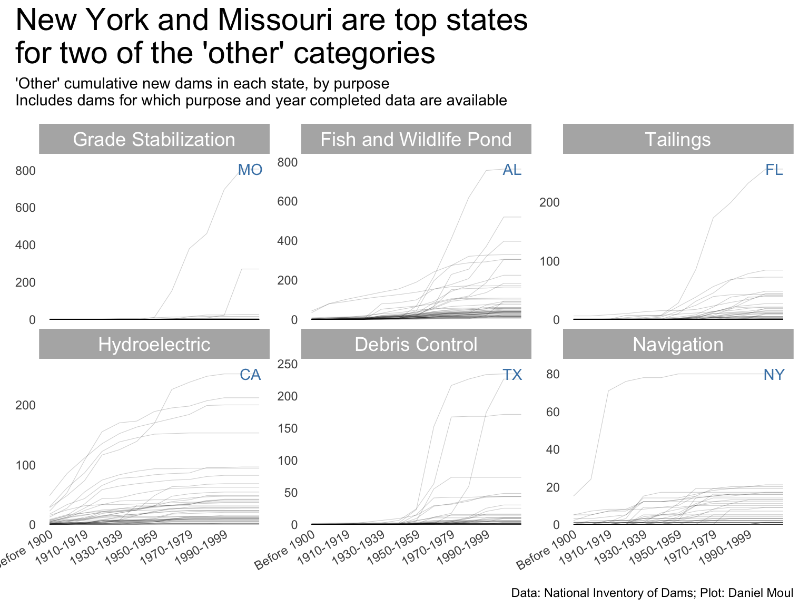
Figure 6.22: Unpacking the ‘other’ category in purposes
Show the code
year_build_by_primary_purpose <- dams_no_geo |>left_join(dams_no_geo_all_purposes |>select(nidId, purpose_id),by =join_by(nidId)) |>filter(yearCompletedId !="Undetermined", primaryPurposeId !="Other or not specified") |>select(nidId, primaryOwnerTypeId, primaryPurposeId, purpose_id, state, state_abb, state_region, nidStorage, yearCompleted, yearCompletedId) |>mutate(yearCompletedId =factor(yearCompletedId, levels = yearCompletedId_levels, ordered =TRUE)) |>mutate(purpose_id =fct_lump_n(purpose_id, n =5)) |>count(yearCompletedId, purpose_id, state_region, state_abb)p1 <- year_build_by_primary_purpose |>ggplot() +geom_line(aes(yearCompletedId, n, color = purpose_id, group = purpose_id)) +# geom_point(aes(yearCompletedId, n, color = primaryPurposeId),# size = 0.75,# show.legend = FALSE) +scale_x_discrete(breaks = yearCompletedId_breaks) +scale_y_continuous(#label = label_number(scale_cut = cut_short_scale()),expand =expansion(mult =c(0.01, 0.04))) +guides(color =guide_legend(override.aes =list(linewidth =3),nrow =1)) +expand_limits(y =0) +facet_wrap(~state_abb, scales ="free_y") +theme(plot.title.position ="plot",legend.position ="top",axis.text.x =element_text(angle =30, hjust =1) ) +labs(x =NULL,y =NULL )p1 +plot_annotation(title ="New dams and their purposes, by state",subtitle =glue("Includes dams for which purpose and year completed data are available", "\nY axis scale varies"),caption = my_caption )
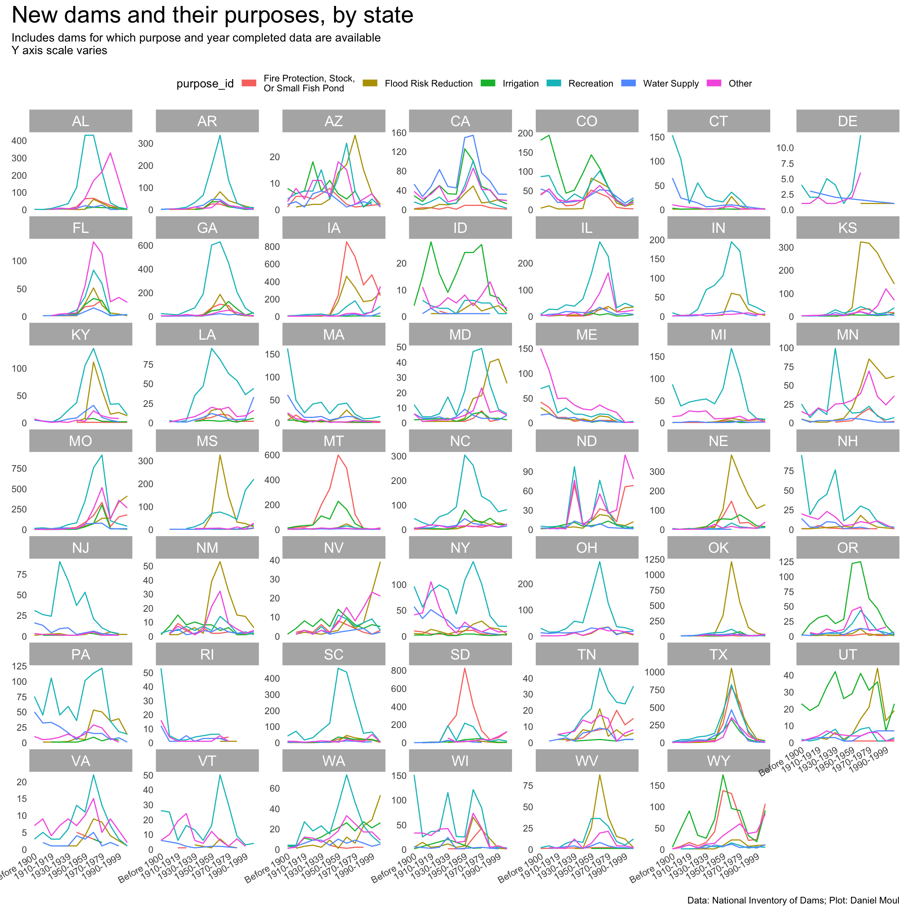
Figure 6.23: New dams and their purposes, by state
Many big dams serve multiple purposes. Compare California and Colorado below with Figure 6.19, which counts only primary purposes.
Show the code
year_build_by_primary_purpose_big_dams <- dams_no_geo |>filter(big_dam) |>left_join(dams_no_geo_all_purposes |>select(nidId, purpose_id),by =join_by(nidId)) |>filter(yearCompletedId !="Undetermined", purpose_id !="Other or not specified") |>select(nidId, primaryOwnerTypeId, primaryPurposeId, purpose_id, state, state_abb, state_region, nidStorage, yearCompleted, yearCompletedId) |>mutate(yearCompletedId =factor(yearCompletedId,levels = yearCompletedId_levels,ordered =TRUE)) |>mutate(purpose_id =fct_lump_n(purpose_id, n =5)) |>count(yearCompletedId, purpose_id, state_region, state_abb)p2 <- year_build_by_primary_purpose_big_dams |>ggplot() +geom_line(aes(yearCompletedId, n, color = purpose_id, group = purpose_id)) +geom_point(aes(yearCompletedId, n, color = purpose_id),size =0.75,show.legend =FALSE) +scale_x_discrete(breaks = yearCompletedId_breaks) +scale_y_continuous(#breaks = 2 * 0:5,expand =expansion(mult =c(0.01, 0.04))) +scale_color_viridis_d(end =0.90) +guides(color =guide_legend(override.aes =list(linewidth =3),nrow =1)) +expand_limits(y =0) +facet_wrap(~state_abb) +theme(plot.title.position ="plot",legend.position ="top",axis.text.x =element_text(angle =30, hjust =1)) +labs(x =NULL,y =NULL )p2 +plot_annotation(title ="California has the most big dams",subtitle =glue("New big dams and their purposes, by state","\nIncludes dams for which purpose and year completed data are available"),caption = my_caption )
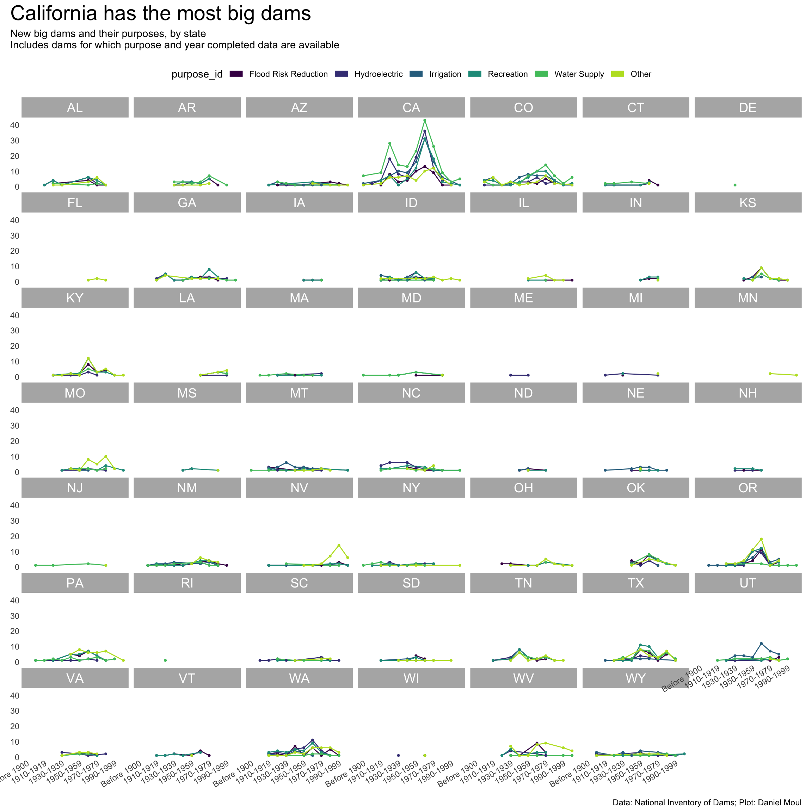
Figure 6.24: New big dams and their purposes, by state
6.6 Dam modifications
The data set includes records of modifications for a small portion of the dams:
Year (four digits) when major modifications or rehabilitation of dam or major control structures were completed. Major modifications are defined as a structural, foundation, or mechanical construction activity which significantly restores the project to original condition; changes the project’s operation; capacity or structural characteristics (e.g. spillway or seismic modification); or increases the longevity, stability, or safety of the dam and appurtenant structures.
Category describing the type of modification: Foundation, Hydraulic, Mechanical, Seismic, Structural, Other3
Figure 6.25: Distibution of years from completion to modifications
In Figure 6.25 above we see the distribution of years from completion to any mod (Figure 6.25 panel A) and to the first model (panel B). The distributions have a similar shape–partly because 85% of dams with modification data are for the first modification.
Even so, when we look at the distribution of years from completion to modification (Figure 6.26), the shapes are similar.
Is the modification data complete? Unlikely, especially in earlier years and for smaller dams. Beyond that intuition, I cannot assess what proportion of modifications might be missing. Of the 86,351 dams, 6,514 have associated modification dates. 5,436 have valid modification dates.
6.7 State-level information
Below is state-level information, in case you wish to dig in.
Show the code
p1 <- dams_no_geo |>count(state, primaryOwnerTypeId) |>mutate(state =fct_reorder(state, n, sum),primaryOwnerTypeId =fct_reorder(primaryOwnerTypeId, n, sum)) |>ggplot() +geom_col(aes(x = n, y = state, fill = primaryOwnerTypeId),alpha =0.7) +scale_x_continuous(labels =label_number(scale_cut =cut_short_scale()),expand =expansion(mult =c(0, 0.02))) +scale_fill_viridis_d(end =0.9,direction =-1) +guides(fill =guide_legend(reverse =TRUE,ncol =2)) +theme(legend.position ="top")+labs(subtitle ="A: Primary owner",x =NULL,y =NULL,fill =NULL )p2 <- dams_no_geo |>count(state, primaryPurposeId) |>mutate(state =fct_reorder(state, n, sum),primaryPurposeId =fct_reorder(primaryPurposeId, n, sum)) |>ggplot() +geom_col(aes(x = n, y = state, fill = primaryPurposeId),alpha =0.7) +scale_x_continuous(labels =label_number(scale_cut =cut_short_scale()),expand =expansion(mult =c(0, 0.02))) +scale_fill_viridis_d(end =0.9,direction =-1) +guides(fill =guide_legend(reverse =TRUE,ncol =2)) +theme(legend.position ="top")+labs(subtitle ="B: Primary purpose",x =NULL,y =NULL,fill =NULL )p3 <- dams_no_geo |>count(state, primaryDamTypeId) |>mutate(state =fct_reorder(state, n, sum),primaryDamTypeId =fct_reorder(primaryDamTypeId, n, sum)) |>ggplot() +geom_col(aes(x = n, y = state, fill = primaryDamTypeId),alpha =0.7) +scale_x_continuous(labels =label_number(scale_cut =cut_short_scale()),expand =expansion(mult =c(0, 0.02))) +scale_fill_viridis_d(end =0.9,direction =-1) +guides(fill =guide_legend(reverse =TRUE,ncol =2)) +theme(legend.position ="top") +labs(subtitle ="C: Primary dam type",x =NULL,y =NULL,fill =NULL )p1 + p2 + p3 +plot_annotation(title ="Basic counts: owner, purpose, dam type",caption = my_caption )
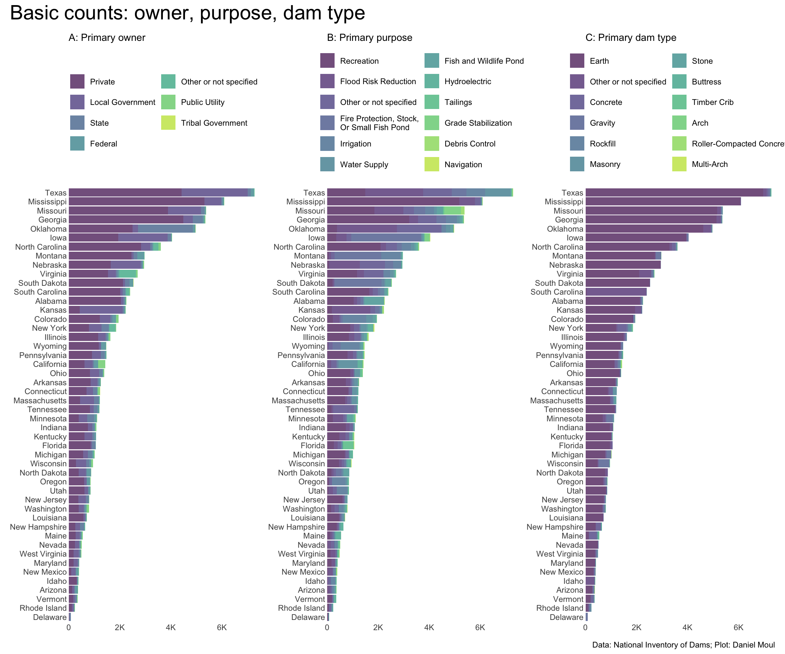
Figure 6.29: Basic counts: owner, purpose, dam type - by state
Show the code
p1 <- dams_no_geo |>count(state, primaryOwnerTypeId) |>mutate(state =fct_reorder(state, n, sum),primaryOwnerTypeId =fct_reorder(primaryOwnerTypeId, n, sum)) |>ggplot() +geom_col(aes(x = n, y = state, fill = primaryOwnerTypeId),position ="fill",alpha =0.7) +scale_x_continuous(labels =label_number(scale_cut =cut_short_scale()),expand =expansion(mult =c(0, 0.02))) +scale_fill_viridis_d(end =0.9,direction =-1) +guides(fill =guide_legend(reverse =TRUE,ncol =2)) +theme(legend.position ="top")+labs(subtitle ="A: Primary owner",x =NULL,y =NULL,fill =NULL )p2 <- dams_no_geo |>count(state, primaryPurposeId) |>mutate(state =fct_reorder(state, n, sum),primaryPurposeId =fct_reorder(primaryPurposeId, n, sum)) |>ggplot() +geom_col(aes(x = n, y = state, fill = primaryPurposeId),position ="fill",alpha =0.7) +scale_x_continuous(labels =label_number(scale_cut =cut_short_scale()),expand =expansion(mult =c(0, 0.02))) +scale_fill_viridis_d(end =0.9,direction =-1) +guides(fill =guide_legend(reverse =TRUE,ncol =2)) +theme(legend.position ="top")+labs(subtitle ="B: Primary purpose",x =NULL,y =NULL,fill =NULL )p3 <- dams_no_geo |>count(state, primaryDamTypeId) |>mutate(state =fct_reorder(state, n, sum),primaryDamTypeId =fct_reorder(primaryDamTypeId, n, sum)) |>ggplot() +geom_col(aes(x = n, y = state, fill = primaryDamTypeId),position ="fill",alpha =0.7) +scale_x_continuous(labels =label_number(scale_cut =cut_short_scale()),expand =expansion(mult =c(0, 0.02))) +scale_fill_viridis_d(end =0.9,direction =-1) +guides(fill =guide_legend(reverse =TRUE,ncol =2)) +theme(legend.position ="top")+labs(subtitle ="C: Primary dam type",x =NULL,y =NULL,fill =NULL )p1 + p2 + p3 +plot_annotation(title ="Basic counts: owner, purpose, dam type (proportion of each category)",caption = my_caption )
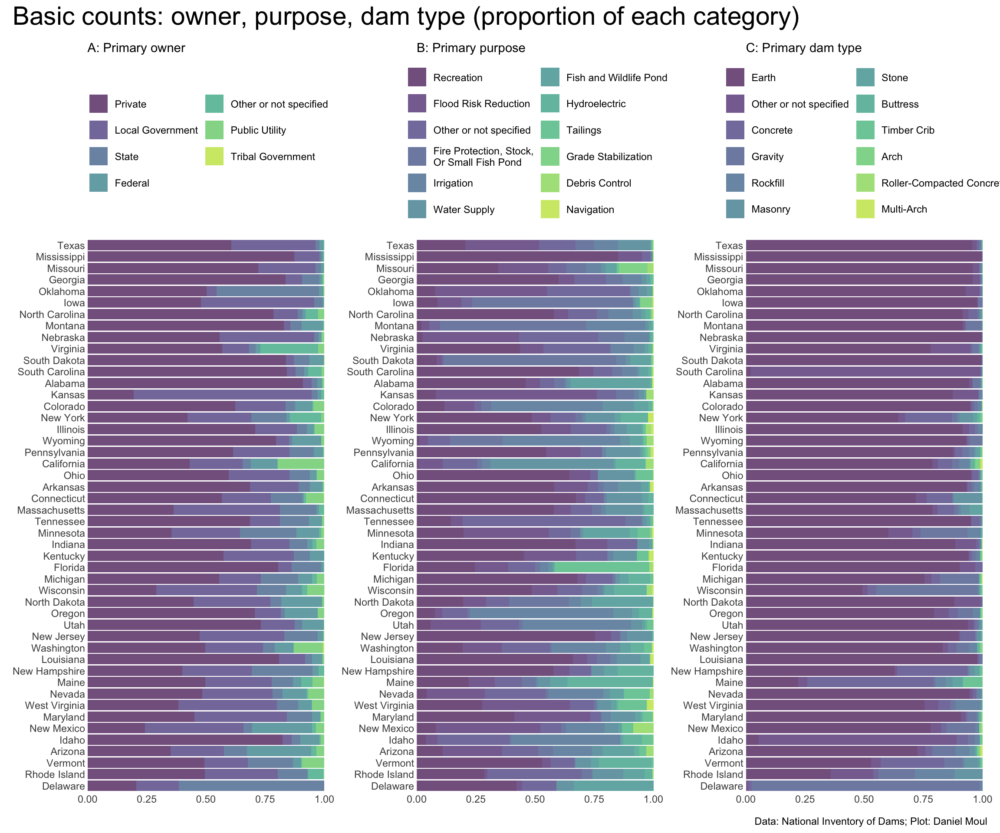
Figure 6.30: Basic counts: owner, purpose, dam type (proportion of each category) - by state
I’m surprised Florida is so low in the ranking in panel A, given it’s such a flat state. Also that it has 71 big dams (panel B).
Looking deeper #1: all the big dams are privately owned by companies mining phosphorus, potash, etc. and nearly all have “tailings” as their primary purpose. (They have smaller dams in Florida too.)
Looking deeper #2: Regarding dams with the highest nidStorage_median owned by PCS PHOSPHATE (a subsidiary of Nutrien):
It’s suspicious that median, smallest, and largest are all the same size – are the entries duplicates, or are there data errors? It’s very unlikely that three dams would manage exactly the same amount of water or be exactly the same height.
Each dam has it’s own name and nidId, and long/lat coordinates are different.
I verified the dams on Google maps: there are three separate holding ponds very close to each other, located in North Florida about halfway between Tallahassee and Jacksonville.
Thus is seems some of the data fields were duplicated, but not all:
Show the code
dams_no_geo |>filter(big_dam, state_abb =="FL", ownerNames =="PCS PHOSPHATE") |>select(nidId, name, ownerNames, `primary PurposeId`= primaryPurposeId, nidHeight, nidStorage, `surface Area`= surfaceArea, longitude, latitude) |>arrange(nidId) |>gt() |>tab_header(md("**PCS PHOSPHATE's big dams seem to have some duplicated data in the NID**")) |>fmt_number(columns =starts_with("nid"),decimals =0)
PCS PHOSPHATE’s big dams seem to have some duplicated data in the NID